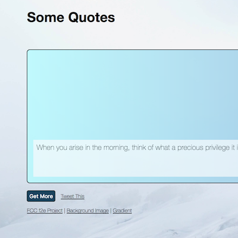
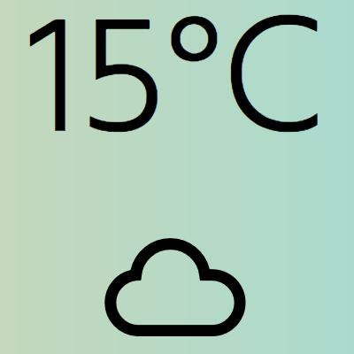
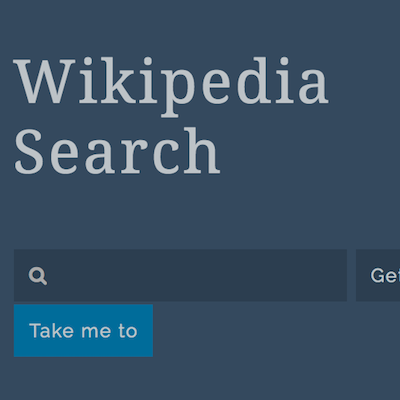

Hey there.
An app & website testing enthusiast. Always want to be the earlist adopter.
Now self teaching herself to create a world of herself by writing codes.
When she's not learning and working, she might paint, climb small mountains or go to coffee shops and cinemas to enjoy a nice afternoon.
Endless Curiosity.
I am a curious journalist, particularly in technology field. I joined Inside in 2013, mainly covered about Taiwanese entrepreneur, programmers and designers. Also I introduced the newest tech trends from Silicon Valley. This work experience is definitely the most important factor inspired me to jump out from the position of an observer, but to get my own hands dirty - make something from scretch. Below are some selected works.Newbie Playground.
There was a period of time in my childhood I indulged myself in making 'homepage' using FrontPage and Dreamweaver and met some friends online. Designing layout and figuring out the colour palette gave me lots of fun. But I never thought I can build it by manually writing complex codes.
Luckily, In September 2013, I got a chance to join Rails Girls Event and finally wrote my first line of code there. And then I got coursera certificate of 'Programming for Everybody' in 2014. However I know I have much more passion in usability and visual concept. I decided to turn back to my childhood interest -- focuing on learning HTML, CSS, Javascript through FreeCodeCamp and Udacity. Though slowly, I've made some progress and sincerely enjoyed creating small project. CodePen and HyperDev are my favorite playgrounds.
Below are some of my unmature work. Click to see details:
- Quote Machine
- Local Weather
- Wikipedia Viewer